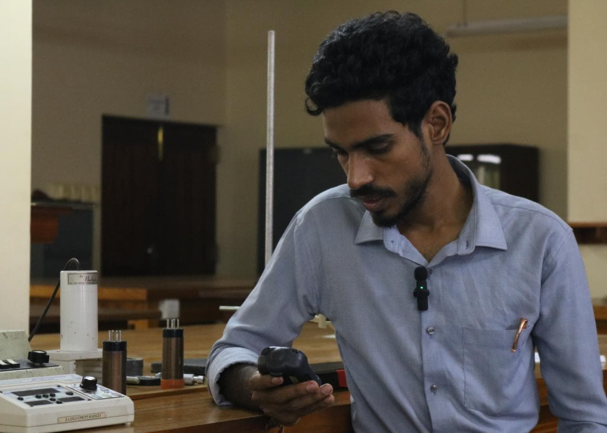

Vithushan Nallanathan
Physics graduate from the University of Peradeniya. I teach astronomy and mathematics, research natural radioactivity, and write about science for everyone.

About
Education, skills and what I'm looking for.
BSc (Hons) in Physics with Mathematics
GPA 3.72/4.00 in Mathematics at the end of second year. Coursework included astrophysics, quantum mechanics, special and general relativity, nuclear physics, electromagnetism, nano science, classical mechanics, differential equations, real analysis, abstract algebra and numerical analysis.
What I do
I enjoy explaining hard ideas clearly, whether to first-year undergraduates, A/L students or a general audience. I also write short fiction. I'm looking to contribute to research, teaching and science outreach.
Skills
AstrophysicsNuclear physicsGamma-ray spectroscopyMathematical modellingPythonOriginSPSSScientific writingPublic speakingEvent planning
Courses
From Big Bang to Dark Energy (University of Tokyo) and The Science of Well-Being (Yale), both on Coursera.
Teaching
University lecturing, laboratory demonstrating and school seminars.
Visiting Lecturer, SLIIT Kandy Uni
Delivered the 60-hour module MA0014 Foundational Mathematics: algebraic fractions, trigonometry, statistics, differentiation, integration, simultaneous equations, partial fractions, matrices, functions, and logarithmic and exponential functions. Prepared lecture materials and assignments.
Temporary Demonstrator, Department of Physics, University of Peradeniya
- Lead problem-solving lectures and write tutorials for PHY2812 Introductory Astronomy: geostationary orbits, Kepler's laws, Olbers' paradox, surface temperature equilibrium of Earth and Venus, the electromagnetic spectrum, black holes, stellar evolution and escape velocity.
- Plan and run practicals: Resonance Tube and Sonometer (PHY1911), IRAF and Gamma Ray Spectroscopy and Geiger-Müller Counter (Advanced Laboratory), Young's Modulus of a Copper Wire (2000L).
- Mark assignments for PHY3812 Astrophysics, Introductory Nano Science and General Physics 1.
Physics seminar teacher, "Elluththayutham"
Ran A/L Physics revision seminars at J/Bandarawela Tamil Central College (twice), J/Sarasawi Central College and J/Mathina National College, focused on the topics students found hardest.
Project Officer Trainee, Career Guidance Unit
Started and managed projects supporting the academic and mental wellbeing of Faculty of Science students.
Research
Radioactivity measurement and astrophysics education.
Natural Radioactivity Along the Coastal Areas in Jaffna
Measured and analysed natural radioactivity along Jaffna's coast using in-situ methods and gamma-ray spectroscopy, and assessed the implications. Abstract published in the proceedings of iPurse 2026, University of Peradeniya, with T. P. Ranawaka.
Level of Interest and Engagement in Astrophysics among Undergraduate Students in Sri Lanka
With C. M. Niranjan and T. P. Ranawaka.
Writing
Science for general readers, and stories.
Science articles
- The Biological Foundations of Astrobiology, Protect Nature, Vol. 5, Zoologists' Association of the University of Peradeniya (2025)
- The Natural Background Radiation Detection Methods: How do we detect the invisible?, IPSL magazine (2025)
- The Mathematical Pathways to Multiverse, Mathema, Mathematical Society of the University of Peradeniya (under review)
Short fiction
- The Rings of Shadows, Vol. 1 (2021)
- Pandemic World After Corona, Vol. 2 (2022)
- 3 Points, Vol. 4 (2024)
Recognition
Competitions and awards, newest first.
- Runner Up, SLAAS 3-minute video competition (2025): How do we detect the invisible?
- Silver Honors, International Astronomy and Astrophysics Competition, final round (2025)
- First Runner Up, Speak Out Central Province, Edith Cowan University (2025)
- Best Ice Breaker Speech and Best Educational Segment, Speech Craft 2025
- Second Runner Up, Chess and 4×100m relay, Scieclash 2025
- Finalist, Spell Binders, Wayamba University (2024)
- Second Runner Up, AFELA Creative Series short stories (2024)
- Merit, IAAMC Olympiad national level (2016)
- High Distinction, National Mathematical Olympiad (2015)
- Runner Up, Provincial Creative Writing Competition (2014)
- Winner, Provincial Mathematics Competition (2011)
Leadership
Clubs, programmes and outreach at the University of Peradeniya.
Roles
- President, Gavel Club and International Interaction Club (2023 to 2024)
- Vice President, Students for Exploration and Development of Space (2024 to 2025)
- Director of Social Wellness, Wellness Circle (2024 to 2025)
- Ambassador, International Astronomy and Astrophysics Competition (2020 to present)
- Student Representative, SAAC, Faculty of Science (2022 to 2025)
Programmes
- Project Chair, Healing Mind: stress management for undergraduates (2025)
- Organiser, Flex and Flow: yoga wellbeing sessions (2025)
- Moderator and organiser, Insight Ignite: communication skills for school students (2024)
- Moderator and delegate management, Hill Country Youth Peace Summit (2023)
Contact
For teaching, research collaboration, talks or science writing.
Academic reference
Dr. T. P. Ranawaka, Lecturer, Department of Physics, University of Peradeniya
tpranawaka@sci.pdn.ac.lk